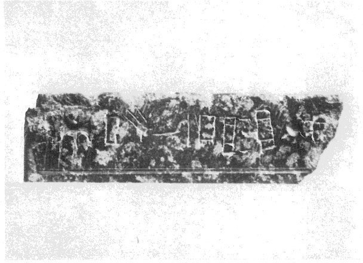
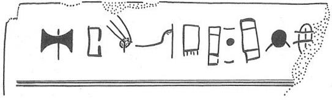

-
IOZa7
Names
Aliases for the inscription.
IOZa7, IO Za 7
Support
Type of Object.
Stone vessel
Location
Site where object was found.
Iouktas
Findspot
Location at Site.
Unavailable


Scribe
Writer of Inscription.
Unavailable
Context
Approximate Date of Inscription.
Late Minoan I
1600-1450 BCE
Dimensions
Height x Length x Thickness.
Catalogue
Museum Reference Number.
Readings
1 1 0 A none
1 1 0 TA none
1 1 0 I none
1 1 0 *301 none
1 1 0 WA none
1 1 0 JA none
1 1 1 *900 none
1 1 2 JA none
1 1 2 TI none
1 1 2 *321 none
Linear A Transcription
A Linear A transcription with words parsed separately.
Line breaks match the inscription.
𐘇𐘳𐘚𐙕𐘮𐘱𐄁𐘱𐘠𐙭
ASCII Transcription
An ASCII transcription with words parsed separately.
Line breaks match the inscription.
ATAI*301WAJA*900JATI*321
Linear A Tabulation
A Linear A transcription with words parsed separately.
Line breaks are logical, e.g. to represent a list.
𐘇𐘳𐘚𐙕𐘮𐘱𐄁𐘱𐘠𐙭
ASCII Tabulation
An ASCII transcription with words parsed separately.
Line breaks are logical, e.g. to represent a list.
ATAI*301WAJA*900JATI*321
IO Za 7
(HM 3784) (GORILA V: 28-29), square Libation Table,
serpentine (terrace III, MM
III-LM I context)
A-TA-I-*301-WA-JA • JA-TI-*321 [
• over [[ ]].
Commentary © John Younger
References
papers/GORILA-Vol5.pdf#page=81